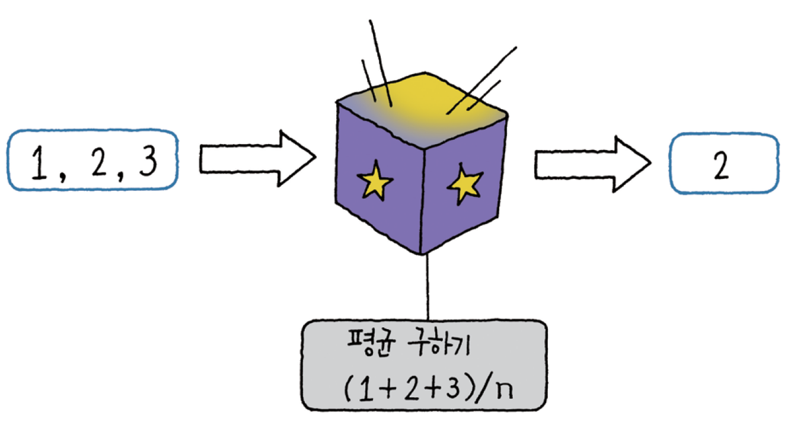
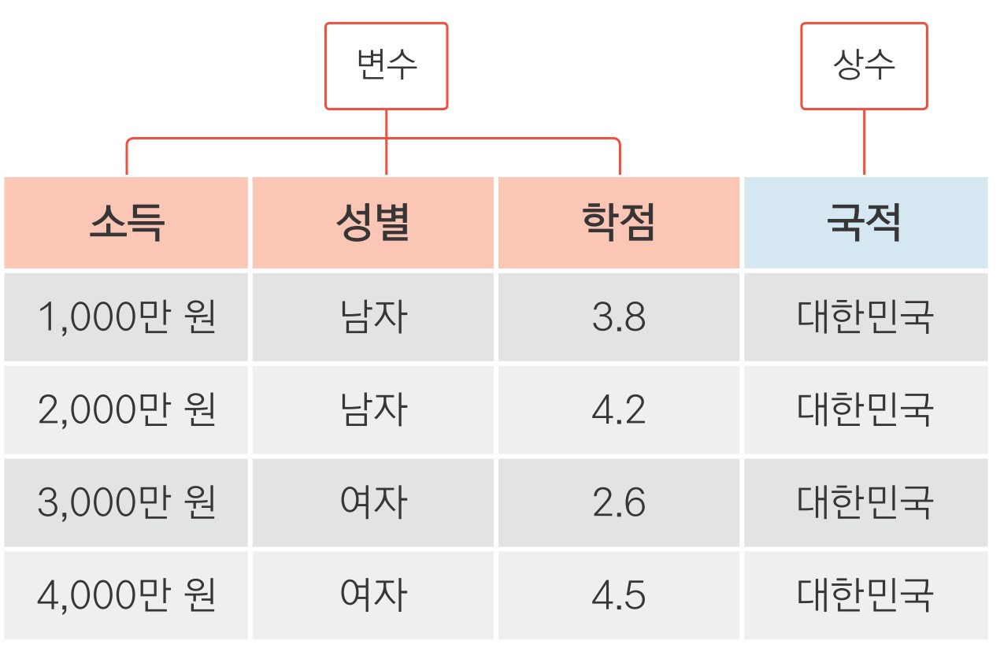
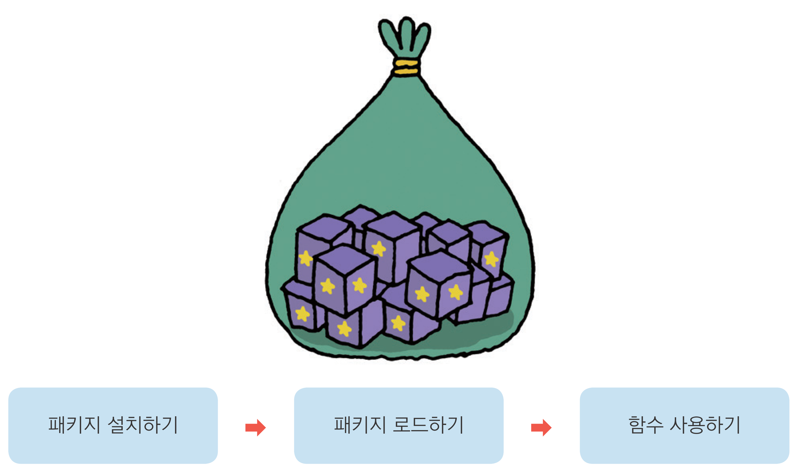
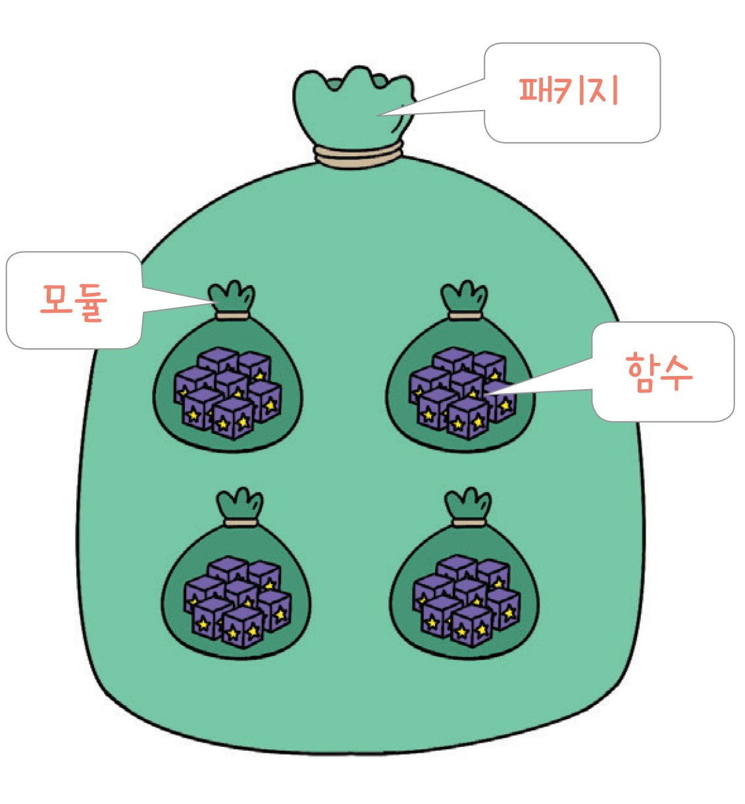
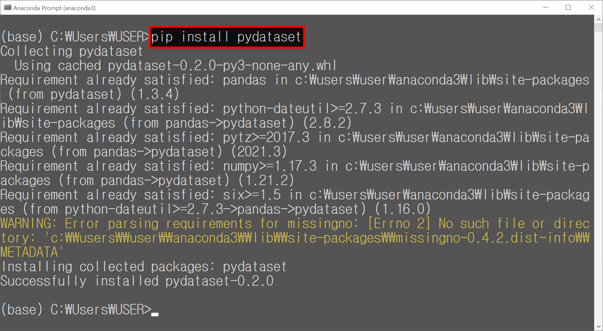

a = 1 # a에 1 할당
a # a 출력1

03-1 변하는 수, ‘변수’ 이해하기(link)
03-2 마술 상자 같은 ‘함수’ 이해하기(link)
03-3 함수 꾸러미, ‘패키지’ 이해하기(link)




seaborn의 titanic 데이터로 그래프 만들기load_dataset()로 titanic 데이터 불러오기 survived pclass sex age ... deck embark_town alive alone
0 0 3 male 22.0 ... NaN Southampton no False
1 1 1 female 38.0 ... C Cherbourg yes False
2 1 3 female 26.0 ... NaN Southampton yes True
3 1 1 female 35.0 ... C Southampton yes False
4 0 3 male 35.0 ... NaN Southampton no True
.. ... ... ... ... ... ... ... ... ...
886 0 2 male 27.0 ... NaN Southampton no True
887 1 1 female 19.0 ... B Southampton yes True
888 0 3 female NaN ... NaN Southampton no False
889 1 1 male 26.0 ... C Cherbourg yes True
890 0 3 male 32.0 ... NaN Queenstown no True

dataset_id title
0 AirPassengers Monthly Airline Passenger Numbers 1949-1960
1 BJsales Sales Data with Leading Indicator
2 BOD Biochemical Oxygen Demand
3 Formaldehyde Determination of Formaldehyde
4 HairEyeColor Hair and Eye Color of Statistics Students
.. ... ...
752 VerbAgg Verbal Aggression item responses
753 cake Breakage Angle of Chocolate Cakes
754 cbpp Contagious bovine pleuropneumonia
755 grouseticks Data on red grouse ticks from Elston et al. 2001
756 sleepstudy Reaction times in a sleep deprivation study mpg cyl disp hp drat ... qsec vs am gear carb
Mazda RX4 21.0 6 160.0 110 3.90 ... 16.46 0 1 4 4
Mazda RX4 Wag 21.0 6 160.0 110 3.90 ... 17.02 0 1 4 4
Datsun 710 22.8 4 108.0 93 3.85 ... 18.61 1 1 4 1
Hornet 4 Drive 21.4 6 258.0 110 3.08 ... 19.44 1 0 3 1
Hornet Sportabout 18.7 8 360.0 175 3.15 ... 17.02 0 0 3 2
Valiant 18.1 6 225.0 105 2.76 ... 20.22 1 0 3 1
Duster 360 14.3 8 360.0 245 3.21 ... 15.84 0 0 3 4
Merc 240D 24.4 4 146.7 62 3.69 ... 20.00 1 0 4 2
Merc 230 22.8 4 140.8 95 3.92 ... 22.90 1 0 4 2
Merc 280 19.2 6 167.6 123 3.92 ... 18.30 1 0 4 4
Merc 280C 17.8 6 167.6 123 3.92 ... 18.90 1 0 4 4
Merc 450SE 16.4 8 275.8 180 3.07 ... 17.40 0 0 3 3
Merc 450SL 17.3 8 275.8 180 3.07 ... 17.60 0 0 3 3
Merc 450SLC 15.2 8 275.8 180 3.07 ... 18.00 0 0 3 3
Cadillac Fleetwood 10.4 8 472.0 205 2.93 ... 17.98 0 0 3 4
Lincoln Continental 10.4 8 460.0 215 3.00 ... 17.82 0 0 3 4
Chrysler Imperial 14.7 8 440.0 230 3.23 ... 17.42 0 0 3 4
Fiat 128 32.4 4 78.7 66 4.08 ... 19.47 1 1 4 1
Honda Civic 30.4 4 75.7 52 4.93 ... 18.52 1 1 4 2
Toyota Corolla 33.9 4 71.1 65 4.22 ... 19.90 1 1 4 1
Toyota Corona 21.5 4 120.1 97 3.70 ... 20.01 1 0 3 1
Dodge Challenger 15.5 8 318.0 150 2.76 ... 16.87 0 0 3 2
AMC Javelin 15.2 8 304.0 150 3.15 ... 17.30 0 0 3 2
Camaro Z28 13.3 8 350.0 245 3.73 ... 15.41 0 0 3 4
Pontiac Firebird 19.2 8 400.0 175 3.08 ... 17.05 0 0 3 2
Fiat X1-9 27.3 4 79.0 66 4.08 ... 18.90 1 1 4 1
Porsche 914-2 26.0 4 120.3 91 4.43 ... 16.70 0 1 5 2
Lotus Europa 30.4 4 95.1 113 3.77 ... 16.90 1 1 5 2
Ford Pantera L 15.8 8 351.0 264 4.22 ... 14.50 0 1 5 4
Ferrari Dino 19.7 6 145.0 175 3.62 ... 15.50 0 1 5 6
Maserati Bora 15.0 8 301.0 335 3.54 ... 14.60 0 1 5 8
Volvo 142E 21.4 4 121.0 109 4.11 ... 18.60 1 1 4 2앞에서 익힌 기능을 활용해 분석 문제를 해결해 보세요.
Q1. 시험 점수 변수 만들고 출력하기
학생 5명이 시험을 봤습니다. 학생들의 시험 점수를 담고 있는 변수를 만들어
출력해 보세요. 학생들의 시험 점수는 다음과 같습니다.
80, 60, 70, 50, 90
Q2. 합계 점수 구하기
앞 문제에서 만든 변수를 이용해 합계 점수를 구해 보세요.
Q3. 합계 점수 변수 만들어 출력하기
합계 점수를 담고 있는 새 변수를 만들어 출력해 보세요. 앞 문제를 풀 때
사용한 코드를 응용하면 됩니다.
Q1. 시험 점수 변수 만들고 출력하기
학생 5명이 시험을 봤습니다. 학생들의 시험 점수를 담고 있는 변수를 만들어
출력해 보세요. 학생들의 시험 점수는 다음과 같습니다.
80, 60, 70, 50, 90
Q2. 합계 점수 구하기
앞 문제에서 만든 변수를 이용해 합계 점수를 구해 보세요.